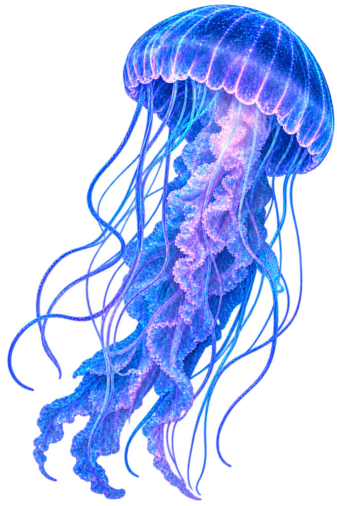
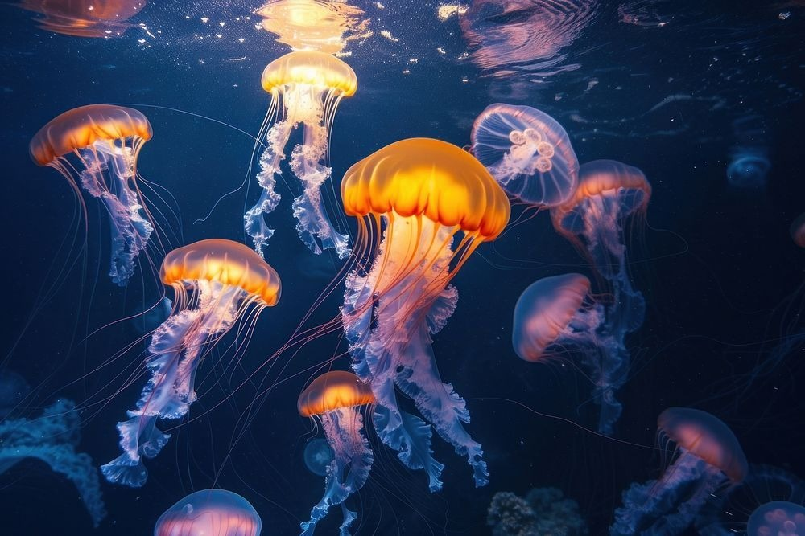
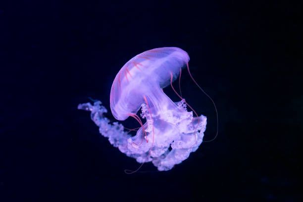
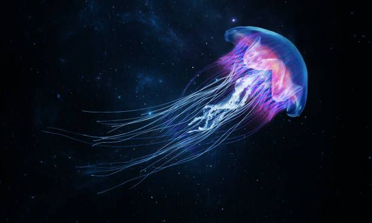

Agua-Viva
Medusozoa
A água-viva é um animal marinho conhecido por seu corpo gelatinoso e seus longos tentáculos. Existem milhares de espécies, encontradas em diferentes regiões dos oceanos, e algumas possuem a capacidade de produzir luz.

Curiosidades
Alimentação
Alimentam-se principalmente de pequenos peixes, plâncton, crustáceos e outros pequenos organismos marinhos.
Tempo de vida
A expectativa de vida varia bastante entre as espécies, podendo ser de apenas alguns meses ou chegar a vários anos.
Tentáculos
Seus tentáculos possuem células especiais chamadas cnidócitos, que podem liberar substâncias usadas para capturar presas e se defender.
Nascimento
As águas-vivas passam por diferentes fases durante seu ciclo de vida. Após a reprodução, surgem pequenas larvas que se fixam em uma superfície e posteriormente dão origem às águas-vivas jovens.
Importantes para o ecossistema
Participam da cadeia alimentar marinha, servindo de alimento para diversos animais e ajudando no equilíbrio dos ecossistemas.
Habitat
Podem ser encontradas em praticamente todos os oceanos, desde águas costeiras até regiões profundas.


Você Sabia?
Algumas espécies de água-viva são bioluminescentes e conseguem produzir luz, criando um brilho fascinante no ambiente marinho.
